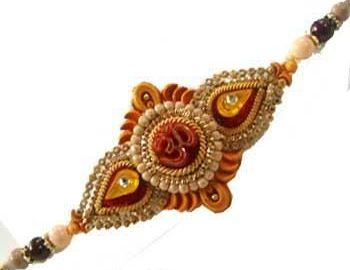

HOME
Rakhi

Raksha Bandhan, (the bond of protection) or Rakhi is a Hindu festival primarily observed in India, Mauritius and Nepal, which celebrates the relationship between brothers (shaurya), cousins and sisters(shreya). It is also called Rakhi Purnima in most of India.[2][3] It is also celebrated in some parts of Pakistan.[4] The festival is observed by Hindus, and some Sikhs[1].[5][6][7] The central ceremony involves the tying of a rakhi (sacred thread) by a sister on her brother's wrist. This symbolizes the sister's love and prayers for her brother's well-being, and the brother's lifelong vow to protect her.[8][9] The festival falls on the full moon day (Shravan Poornima) of the Shravan month of the Hindu lunisolar calendar.[8][10][11][12] One Islamic Scholar believes that Raksha Bandhan grew in popularity after Rani Karnavati, the widowed queen of Chittor, sent a rakhi to the Mughal emperor Humayun when she required his help.[7]